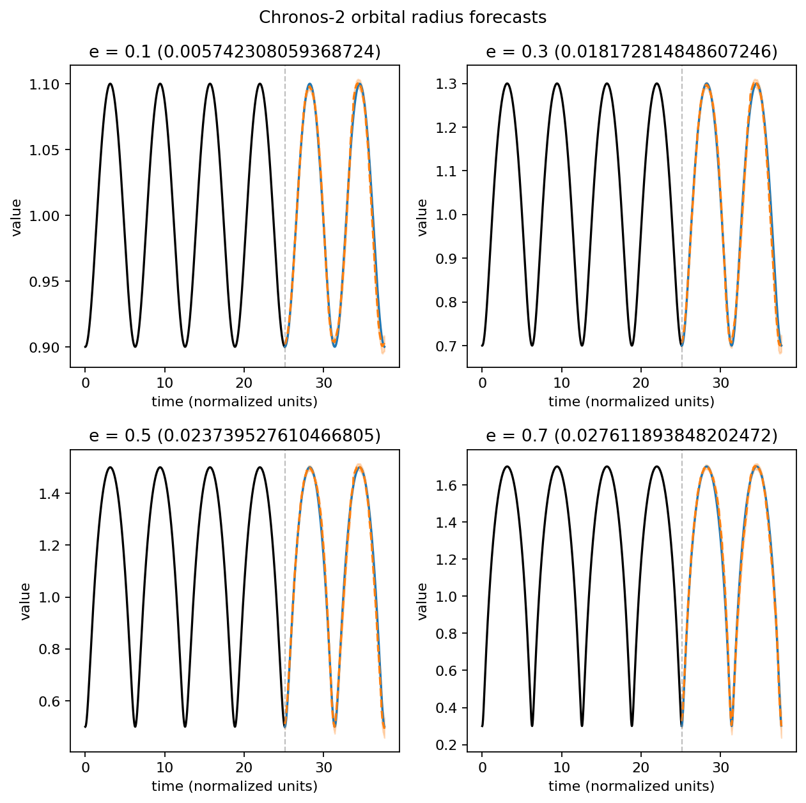

Space / orbital forecasting
Exploring orbital motion and how time-series models forecast it. These graphs come from the project’s notebook and forecasting script.
Forecasting orbital radius
Chronos-2 forecasts radius over time for four orbital eccentricities. Black is the observed context, blue is the actual future radius, and dashed orange is the model’s median forecast. The orange band spans its 10th to 90th percentile predictions. Each title includes the root mean square error.

How eccentricity changes an orbit
Four simulated orbital paths share the same semi-major axis. Increasing eccentricity stretches the orbit into a more elongated ellipse.

Orbital radius over time
The same orbits viewed as time series: the radius rises and falls each revolution, with larger variation at higher eccentricity. These are simulated ground-truth series, before forecasting.